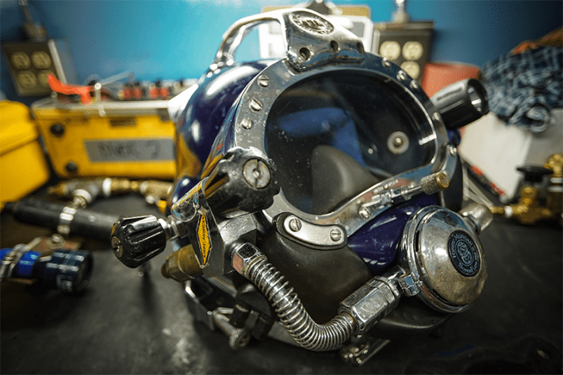
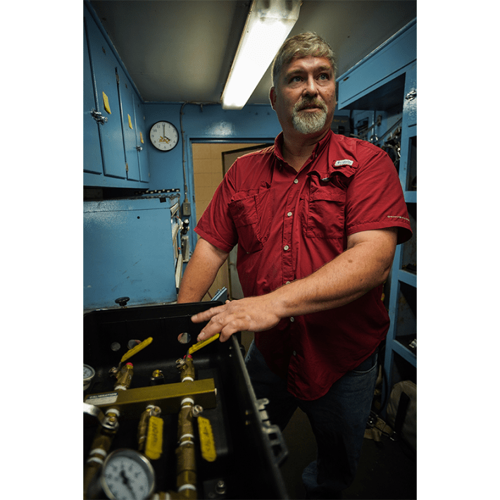
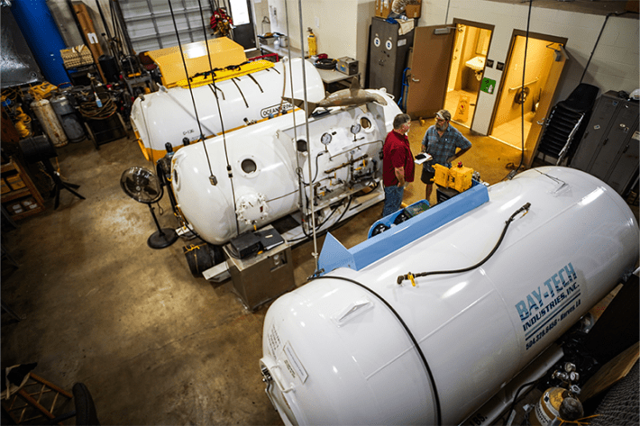

Chris Lemons, a saturation diver from England, is in the rare position of having witnessed his own death. All roughly 40 minutes of it were recorded on video, which he watched the next day aboard the Bibby Topaz, the 350-foot vessel he was diving from—rooting for himself to pull through.
In the smudgy black-and-white footage, Lemons is seen lying on his side at the bottom of the North Sea atop something called a drilling template—a jungle gym of pipes that subsea oil drillers use to manage multiple wellheads—his diving suit and helmet making him resemble a toppled astronaut. For the first several moments, his limbs twitch unnaturally, his hands piteously reaching through the dark toward the remotely operated submersible that his ship sent down to find him.
Then the twitching stops, the blackness of the surrounding sea framing his lonely demise. He is 300 feet below the surface of the North Sea and he can’t breathe. In a freak technical failure, the Bibby Topaz had begun to drift downstream away from him at the exact moment his air hose became entangled in the template. The hose runs to his diving bell, and his diving bell is connected by cables to the ship—and for one tense moment, Lemons himself is the only thing holding the errant 8,000-ton vessel in place.
Then the hose snaps.
“It was like a jack being pulled from a speaker,” Lemons told me when we spoke recently. “I lost all communication, which puts you in a very lonely place. Then the hose, which provides an infinite amount of gas—suddenly I had nothing to breathe at all.”
Breathing a mixture too rich in oxygen gives you something akin to an acid trip with a side of convulsions.
It would be a half an hour before the navigation glitch was solved and the ship was able to reposition the diving bell to rescue Lemons. When his unconscious body was eventually recovered and he was miraculously revived by his diving partners, Dave Yuasa and Duncan Allcock, Lemons had gone all that time without breathing.
For most of us, observing our own passing, especially amid such a forlorn and desolate backdrop, might make for rather difficult viewing.
Not for Lemons.
“I think I’m sort of like everyone else who’s watched the video, thinking—does he make it?” he said.
He made it. Others didn’t. Traumatized by the accident, which was streamed to monitors aboard the Bibby Topaz’s as the emergency unfolded, some of Lemon’s crewmates quit working with divers altogether, he said. But for him and his dive mates, the events of that 2012 accident, 115 miles off the coast of Aberdeen, Scotland, produced the opposite effect.
“It has been a positive in our lives, in a strange way,” he said. “It gave us more confidence.”
Three weeks later, Lemons and his dive partners were back at the bottom of the sea to finish the job cut short by the near tragedy.

HATS OFF: Kirby Morgan dive helmets (known as "hats" in the profession) are the sat diver's most crucial piece of equipment, the lifeline delivering the proper mixture of gases as they work at great depths. This one belongs to Jerry Shepherd and is missing the removable helium reclaimer essential to using it on saturation dives. Photo by Stephen Digges.
If you’re not a saturation diver, it’s hard to imagine these terrifying events as a good day at the office—but it was. While at work, Lemons and his colleagues spend their days anywhere from 300 to 1,000 feet below the surface and remain at pressures up to 30 times that of sea level for as long as a month. To do so, they live in pressurized chambers aboard ships or oil rigs, from which they descend in diving bells to their job sites at the bottom of the sea—as dark, remote, and unhospitable a climate as can be found on Earth. In such a place, close scrapes like Lemons’ are almost routine.
“When people hear the word ‘diving,’ they often think of guys in fins swanning about gracefully in clear blue water,” he said. “This job isn’t that. On nine out of 10 dives, visibility is near zero. Seeing what you’re doing is a luxury.”
Perfected by the United States Naval Submarine Medical Research Laboratory in the late 1950s, saturation diving—called “sat” by those in the business—quickly became a boon to the oil industry and led to a massive proliferation of offshore oil production platforms. In the Gulf of Mexico alone, their numbers mushroomed from only a few hundred to nearly 3,000 by 1972, thanks largely to sat divers who could live at depth pressure to build the undersea infrastructure that offshore drilling required. The number has been climbing ever since.
“Essentially, we’re the glorified plumbers for this system,” Lemons said with sardonic understatement.
But plumbing at these depths isn’t just a matter of turning wrenches and laying pipe—it’s a fight with the limits of physics and biology. Saturation diving treads the razor’s edge of what a human body can endure.
Every trip to the seafloor is a negotiation with gas laws and physiology that cut divers little slack. Without the sealed, pressurized chambers they live in aboard ships for weeks at a time, the special gas mixtures that they breathe, and the diving bells that ferry them from the chambers to the ocean floor, their bodies would seize, suffocate, or come apart from within. Those who do this work survive only because we have managed to forge a fragile scientific truce with the laws governing gases under intense pressure at depths humans were never meant to plumb.
The human frailty that saturation diving eludes is the tendency of our bodies to absorb gases when we’re under high pressures and trying to breathe. Deep underwater, inhaling regular compressed air pushes inert gases—chiefly nitrogen—deep into blood and tissue. The air we breathe as we walk down the street is about 78 percent nitrogen and 21 percent oxygen (with argon and other trace gasses making up the rest). On a day-to-day basis, our bodies essentially ignore it. It’s inert.
But once we dive to about 30 feet underwater, the pressure on us doubles from that at sea level, making the gases behave differently. On a typical scuba dive, when a diver breathes regular air, nitrogen slips into blood and tissue, building a load that can explode into bubbles on the way back up. Ascend back to the surface too quickly and your body essentially becomes a shaken can of beer. Nitrogen fizzes out of solution with your blood and tissues, blocking circulation, lodging in joints, even provoking stroke-like symptoms if they shut off oxygen to the brain. Divers call this decompression sickness “the bends.” Bad cases can, and sometimes do, result in death.
The helium also makes the divers talk like a chorus of chipmunks for the duration of their saturation.
Things only get worse the deeper you go. Nitrogen becomes a timebomb in your tissues and makes you drunk to boot—a state known as nitrogen narcosis. But breathing a mixture too rich in oxygen gives you something akin to an acid trip with a side of convulsions. It is only when divers are fully saturated with inert gas—in sat, that is—that they’re safe from the nasty side effects that breathing produces below about 300 feet, where the pressure is 10 times that experienced by a body at sea level.
Before the advent of saturation diving, humans could work only about a half hour at no greater than about 120 feet below sea level before having to ascend. The longer divers stay down, the more nitrogen accumulates in their system, so even after this short stay at depth, they had to make numerous lengthy stops as they rose to let the gas slowly dissipate. That made getting any work done underwater a pain. Think of sending a carpenter to the 40th floor of a skyscraper to hammer one nail, then lowering him in an elevator that doesn’t descend until the next morning.
Saturation functions by delaying the decompression process. Sat divers enter what’s called a saturation complex, which sits aboard a dive support vessel or oil rig. They are tightly sealed within it and brought to the pressure at the depth where they will work and remain there—unable to leave for any reason—until the job is done. Missing birthdays, weddings, anniversaries, and funerals is part of the work. It is here, topside, that they will live for weeks a time, descending in diving bells to the job site for their shifts. Their isolation ends only when they are depressurized—a days-long process that comes when their work is finished.
The folks who do this kind of work are almost entirely men (there are four women known to have worked as sat divers) between about 25 and 40 years old. Any younger and they wouldn’t have accrued the experience needed to join the ranks. Much older and they might not withstand the rigors of the job as well.
Anecdotally, there are only about 7,000 to 12,000 of them in the whole world, possibly fewer, notes Jerry Shepherd, head instructor at the South Louisiana Community College dive school.* Only one in 15 of his students ascends the professional ziggurat to saturation. Fewer still will stick with the job for an appreciable length of time—the first month-long dive often flushing out the fainter of heart. For those who do stay, said Lemons, it’s imperative that they be drawn to—rather than repelled by—the job’s idiosyncrasies and risks.
For one, there’s really no fixed schedule once you graduate and land a spot on a dive contractor’s roster. Much of the job is waiting by the phone.

MIXOLOGIST: Jerry Shepherd, head instructor at the South Louisiana Community College dive school, shows off a diving manifold, a system of valves that mixes the gases a sat diver would breathe during a dive. Photo by Stephen Digges.
In early June, when I had lunch in New Orleans with two Gulf of Mexico sat divers named Jeff and Dave, who preferred to withhold their last names for professional reasons, both men were looking forward to a few weeks off. By the time they ordered their second beer, though, their phones had rung with assignments for a saturation tour starting the next morning. That’s how quickly things can change. At the same time, a successful diver will work around 160 days a year, cumulatively, and all that downtime, said Shepherd, can lead some divers to act up while shoreside, giving the profession a rambunctious reputation. Bar fights, relationship problems, and run-ins with the law are frequent extracurriculars, according to many familiar with the profession. But all that stays onshore: The claustrophobic environment of the living chamber also makes the job more suitable for people who can be even-tempered and agreeable while they’re on the clock.
“Assholes have a way of not lasting too long in sat,” Jeff told me.
Those graduating from Shepherd’s class will have years of shallower dives ahead of them before they will even be considered for sat. They’ll first do regular compressed air scuba dives to about 120 feet, then graduate to breathing mixed gasses on deeper jobs with higher pay. From there, explain Lemons and Shepherd, with a bit of luck, your dive supervisor might single you out for a promotion to saturation. It pays to stick it out. Sat divers routinely bring home $180,000 to $200,000 a year.
“If you can make it to sat, that’s good money for sitting in a steel chamber for half the year,” said Shepherd.
A standard saturation chamber resembles a giant hamster tube made of metal cylinders. Depending on the size of the dive support vessel, it accommodates anywhere from six to 24 divers. Each complex has living quarters that are slightly less spacious than an airport hotel shuttle van, its walls lined with bunks abutted by a small sitting area and table. It’s almost exactly like being locked in a space capsule.
Once in the complex, divers are pressurized—or “blown down”—over the course of several hours to the pressure they'll be working in once they descend to depth. At the same time, the air inside the saturation chamber phases over to a mixture of helium and oxygen, called heliox. Under pressure, the ordinary air we breathe at the surface becomes toxic. This removes nitrogen, which, under pressure, also affects neurotransmitter functions in the brain, essentially making it an anesthetic. Oxygen levels, too, must be managed—at pressure, too much of the gas turns poisonous, triggering spasms, hallucinations, and chest pains. Heliox therefore contains no nitrogen at all and only a tiny percentage of oxygen to keep the divers alive—at pressure, even a small dose is enough. The lighter helium, meanwhile, is very easy to breathe. Any heavier gas at saturation depth would make inhaling like trying to suck thick soup through a straw.
The helium also makes the divers talk like a chorus of chipmunks for the duration of their saturation. The communications lines in most saturation units come equipped with special descramblers that aim to make the high registers of the diver’s helium voices more intelligible to the staff monitoring them from outside the complex. But their use is limited.
“During decompression, you understand you’re not so much being paid to dive as you are to simply wait inside a can.”
“All they really do is add bass to the high-pitched treble of the helium voices, turning Donald Duck into Oscar the Grouch,” Shepherd told me.
Once fully pressurized to the depth where they’ll be working, it’s time for the downward commutes to start. A smaller crew of divers climb into the diving bell, an egg-shaped steel orb that detaches from the living quarters and is kept at the same pressure. The bell, which is about as spacious as a bathroom stall, is lowered on cables from the ship to the seafloor, its two-inch-thick steel walls protecting the divers from the pressure. Lemons calls it the “taxi to the job site,” though his description of its creaky, shimmying, and ever-darkening descent to the depths that can last up to an hour made me think of an elevator ride into the abyss. Crowded into the bell with the divers are their bulky Kirby Morgan dive helmets—which the divers call “hats.” Typically, divers work in groups of three for six-hour shifts, four teams rotating so work goes on around the clock.
Coiled on hangers in the bell are the braids of their umbilical hoses. These are exactly what they sound like, delivering, as they do, the heliox, electricity, and fiber-optic lines for communication. Each hat is equipped with a microphone and a camera which keeps the divers in touch with their supervisors on the dive support vessel. Given the frigid depths at which the divers operate, another tube running through the umbilical carries warm water to channels in their neoprene drysuits.
When the ride to the seafloor ends, divers exit the bell through the hatch. Since the pressure of the bell equals the pressure at the working depth, the seawater is kept at bay. Two of the divers then put on their helmets with the assistance of the third, referred to as the bellman, who remains in the bell to manage the umbilicals as they snake out behind the divers. Each diver has about 150 feet of slack to wander.
It’s at this point, once you’re finally in the water, that the pressure of the job—both literal and metaphorical—can catch up with you, Dave, the Gulf diver, tells me.
“A couple hundred feet above you is a ship with 160 people on it—cooks, dive support techs, navigators, swabbies—and they’re all there so you can tighten this one bolt at the bottom of the ocean,” he said. “You don’t want to fuck it up.”
After their shifts end, the divers ascend in the bell to the pressurized living chamber aboard the ship. The bell is mated to the chamber to maintain equal pressure between the two. The divers then step through an airlock back into their heliox-filled metal cocoon, still sequestered from an outside world that’s only inches away.

HIGH PRESSURE PROFESSION: Author Charles Digges chats with Jerry Shepherd among decompression chambers used to teach students about working at tremendous pressures. The chambers can also be used treat divers suffering from decompression sickness. Photo by Stephen Digges.
When I visited Shepherd at his dive school in Morgan City, Louisiana, he showed me an array of decompression tables spelling out the wait times for various depths dived.
In general, the standard is one day of waiting for every hundred feet of depth, plus an extra day, meaning a sat team that has been working 1,000 feet down—the maximum beyond which sat divers don’t go to avoid high-pressure nervous syndrome, characterized by tremors and neurological damage—must wait 11 days before they can emerge into sea level air. As decompression proceeds, the pressure is gradually reduced, with several stops along the way to avoid shock. The gas mixtures are also changed as the divers “ascend.” Helium is gradually washed out, oxygen levels are tuned to remain safe, and the divers are eased back toward surface air, Shepherd explained.
These are the longest hours of the job. “During decompression, you understand that you’re not so much being paid to dive as you are to simply wait inside a can,” Lemons told me.
Divers typically devote these long hours to books, movies, and catching up with home via whatever internet connection is available. While some dread the tedium, Paul Dinesson, a Norwegian saturation diver I interviewed, put it to good use producing notes for what would later become a three volume, 2,000-page autobiography, as yet unpublished, of his life at the bottom of the North Sea—giving new meaning to writing under pressure.
While the divers are at depth, their topside support vessel is held in place by a dynamic positioning system—a GPS-guided network of thrusters that acts as an electronic anchor parking the ship in one spot regardless of where the sea and wind want to pitch it. These systems have so many redundancies that their failure is almost unthinkable.
Yet this was precisely the nightmare that unfolded on the night of Lemons’s fateful dive. As the dynamic positioning system of the Bibby Topaz glitched out, the ship drifted with the North Sea current, dragging the diving bell, Lemons, and his dive partners through the water column like marionettes before Lemons’ umbilical snagged on the drilling template they were inspecting that day.
“I didn’t see any bright, beckoning lights when I was out,” Lemons told me. “When I came to in the bell, I was confused, though I understood from the expressions on Dave [Yuasa] and Duncan’s [Allcock’s] faces that something serious had happened. But it would be a while before I connected it to myself.”
“It is amazing what you normalize.”
A paper published on the factors that saved Lemons highlighted the thorough rescue training of the dive staff, the spot-on mixture of his diving gas, which allowed his tissues to hoard oxygen, and the fact that he did, indeed, lose consciousness, which lowered the demands of his system. But the alignment of all those elements is an awful lot to depend on if something goes wrong during a sat dive.
The most dramatic accidents in saturation diving history tend to do with the pressure differentials between the living chambers and the sea level environment of the vessels where they sit. While Lemons’ experience spurred several industry-wide safety upgrades in backup breathing sources and more navigational redundancies, accidents do happen.
The most dramatic of them tend to highlight the collision between our bodies—which are so finely tuned to living at around sea level—and the iron laws of physics governing the gases we breathe when they are subjected to 30 atmospheres of pressure.
Just how powerful those collisions can be was viscerally illustrated in 1970, when a Gulf diver named Donald Boone had a very unfortunate experience on the toilet in his living chamber. In these early days of saturation diving, the toilets operated like simple airlocks. An inner valve on the toilet would be opened to drop the waste, then be closed. An outside tender would then open an exterior valve to suck the contents into a holding tank at sea-level pressure. In Boone’s case, both valves were mistakenly opened at the same time while he was still seated on the toilet. As a result, his small and large intestines were sucked to the outside of his body as the highly pressurized air inside the chamber rushed outward.
Boone survived, but it took some complex logistics. Two trauma surgeons were flown by helicopter to his dive vessel, then brought down to Boone’s pressure in a hyperbaric chamber. In a ghastly procedure, using only local anesthetic because the pressure inside the chamber made standard gaseous anesthetics impossible to use, they operated on Boone inside the sat complex, stabilizing him enough to endure the days-long decompression and another more comprehensive surgery on shore. Extra valves have since been added to sat chamber toilets to prevent this particular horror from repeating itself.
A more lethal tragedy that haunts sat divers is a 1983 accident aboard a Norwegian North Sea drilling rig called the Byford Dolphin, where a routine transfer of divers from the diving bell to the living chambers went gruesomely awry. A clamp that secured the bell to the living chamber opened prematurely, instantly exposing the divers inside to explosive decompression. In the blink of an eye, the chamber went from depth pressure to sea level pressure like a shaken soda can. The pressure differential was so great that one diver was literally torn apart where he stood. Three others inside the chamber died immediately as nitrogen bubbles in their blood and tissue burst. A fifth man, a tender outside the chamber, was struck and killed by the bell as it was flung like a cannon ball away from the chamber.
Less dramatic, though still terrifying stories are a part of every diver’s personal history. Jeff told me of having a several-ton load nearly dropped on him as it descended from his dive vessel. Shepherd spoke of his fear of manta rays, who lie camouflaged on the sea floor, and who, when spooked, dart to the surface. When this happens, a diver’s umbilical can get scooped up by the forked, fleshy appendages around the ray’s mouth, and drag the diver to unexpected and possibly fatal decompression. Norway’s Dinesson was nearly sucked under a piling to an oil platform as it was being repositioned. So long as they keep diving, their harrowing stories pile up.
So why would anyone keep going in this line of work, I asked Lemons.
“I think the bottom line is that it is amazing what you normalize,” he said.
For the past few years, Lemons, now 45, has been working topside as a dive supervisor, but not for any reasons connected to his brush with death. In fact, he went on to dive in saturation for 10 more years. His experience was made into a Netflix/BBC documentary called Last Breath, itself subsequently developed into a film by the same name. In connection with that, Lemons is currently on a sabbatical from the diving world to do public speaking, but plans to return.
His persistence in the industry, he suggested, might have something to do with his new relationship to his own mortality. As Lemons sat at the bottom of the North Sea after the bell and his dive partner had been dragged hopelessly away by the current towing the Bibby Topaz, panic was replaced by something wholly different.
“I can still feel how the fear drained out of me,” he told me. “I’d done all I could, and rather calmly thought, well, this is it—if this is how I have to go when my time comes, it really wasn’t so bad.” 
*As originally published, this article misspelled Jerry Shepherd's last name. It has been corrected in the story above.
Lead image: SvedOliver / Shutterstock